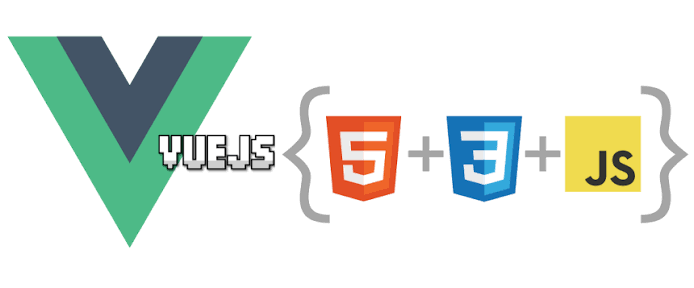
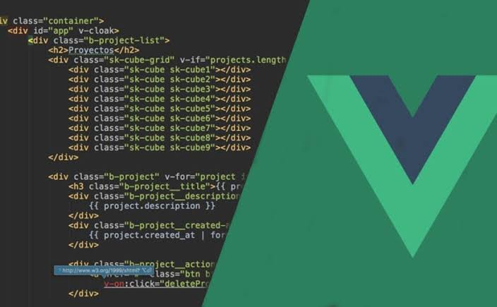

Trabajo práctico de HTML, CSS y JavaScript
Elegí una diapositiva del menú para empezar
En esta presentación voy a hablar sobre qué es Vue, cómo instalarlo, cómo crear un proyecto y qué son los componentes.
Usá el menú de arriba para cambiar de diapositiva.

Un framework es una estructura de trabajo que contiene herramientas, funciones y reglas que ayudan a crear aplicaciones de forma más rápida y organizada, Como por ejemplo Java Script.
Vue es un framework progresivo de JavaScript utilizado para crear interfaces de usuario y aplicaciones web de forma sencilla, rápida y flexible.
1. Instalar Node.js: entrar a nodejs.org y descargar el programa. Este también instala npm, que sirve para instalar herramientas y paquetes.
2. Comprobar la instalación: abrir la terminal y escribir estos comandos:
node -v
npm -vSi aparecen números de versión, significa que están instalados correctamente.
3. Instalar Vue: Vue se puede agregar a un proyecto existente escribiendo este comando en la terminal:
npm install vueListo, Ya tenés los pasos básicos para empezar a trabajar con Vue.
1. Crear el proyecto:
npm create vue@latest2. Entrar a la carpeta:
cd nombre-del-proyecto3. Instalar las dependencias:
npm install4. Ejecutar el proyecto:
npm run dev
Vue permite crear páginas web que reaccionan a los cambios que hace el usuario.
Los componentes son partes de una página web que sirven para organizar mejor el contenido y reutilizarlo.
En Vue, cada una de estas partes se puede crear por separado y después unirlas para formar una página completa.